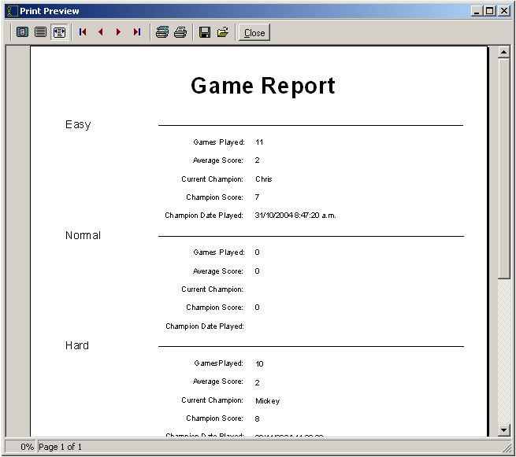

Game Report
The Game Report is a list of the best scores for the champions of each difficulty level. It also lists the number of games that the champion has played on that difficulty level, his or her average score, and the date that the high score was made. Anyone who equals or betters the high score of a champion becomes the new champion.
